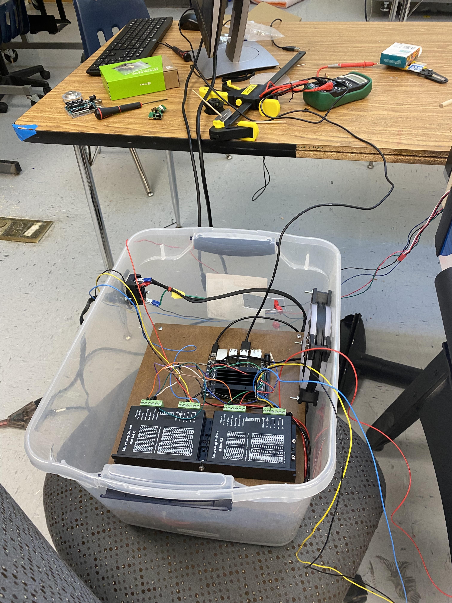
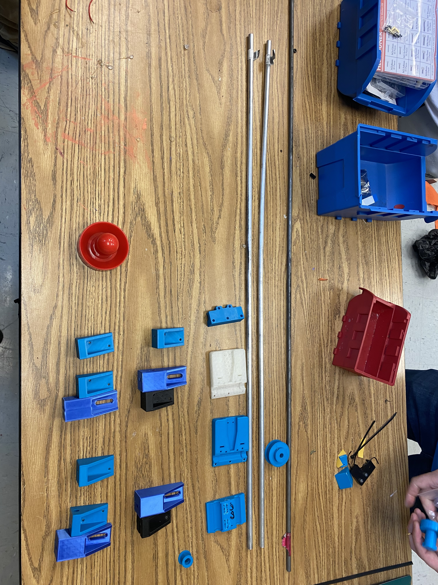
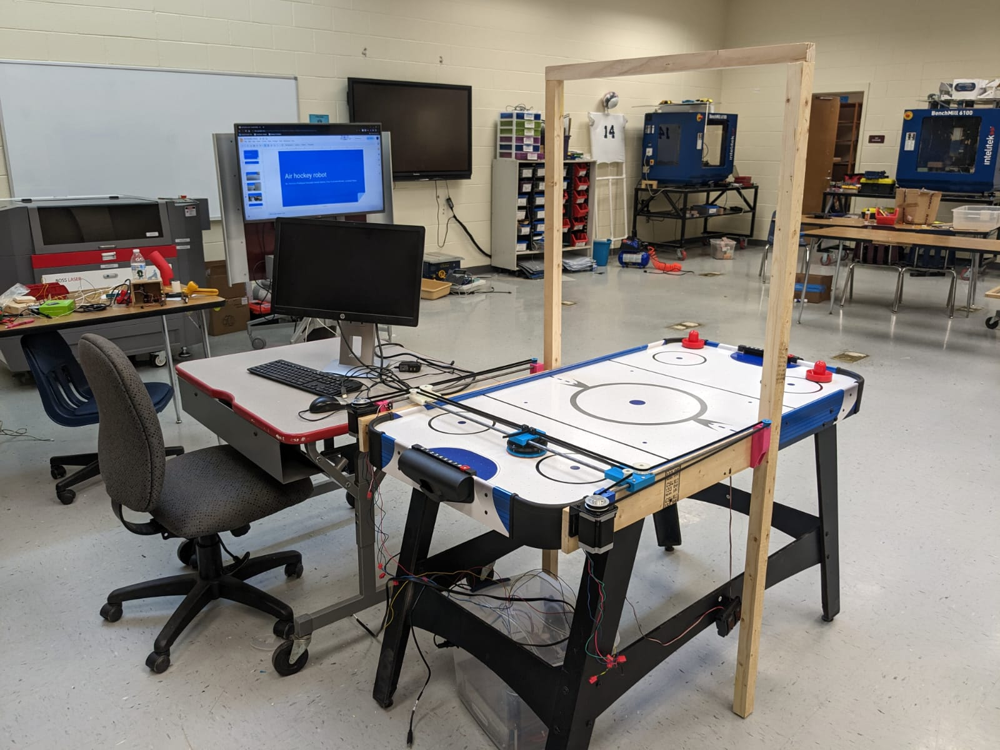

A10: Air Hockey Table
Introduction
This project involved the design and fabrication of an air hockey table prototype. The project focused on mechanical design, fabrication, assembly, and testing, while also exploring an autonomous system that was only partially implemented.
Project Overview
This project involved the design and fabrication of an air hockey table prototype with the goal of incorporating autonomous gameplay. The build required mechanical design, material selection, fabrication, assembly, and testing of the table structure and playing surface.
Although the autonomous system was not fully completed, the project provided hands-on experience with integrating mechanical and electronic components, troubleshooting design challenges, and improving the system through testing and iteration. The final prototype demonstrated the overall concept and served as a strong example of practical engineering design and fabrication.
Project Photos


